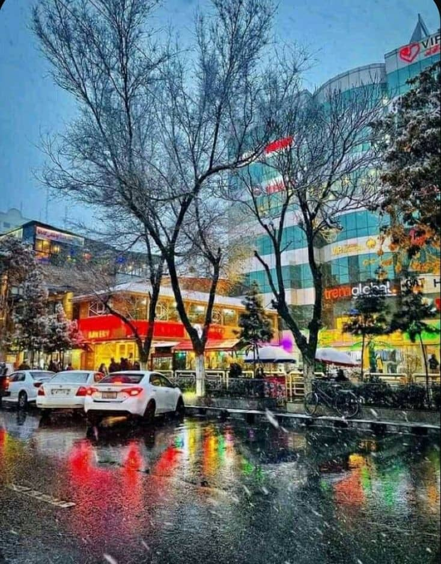

Kabul: The Heart of Afghanistan Kabul, the capital and largest city of Afghanistan, has stood as a central hub of culture, history, and politics for over 3,500 years. Nestled in a valley surrounded by the Hindu Kush mountains, the city has witnessed the rise and fall of empires, serving as a crossroads between East and West.
A Rich History and Cultural Legacy: From its early days as a key point on the Silk Road to being a part of ancient empires like the Persian, Greek, and Mughal, Kabul has always been a melting pot of diverse cultures. The city's architecture, literature, and art reflect this rich tapestry, with many historic sites scattered throughout the city.
Strategic and Political Importance: Kabul has been at the center of Afghanistan’s political landscape, enduring invasions, civil wars, and regime changes. Notably, it was the focal point during the Soviet invasion in the 1980s, the rise and fall of the Taliban, and the U.S.-led intervention in the 21st century. In 2021, Kabul once again became the epicenter of global attention as the Taliban regained control.
Resilience Amid Challenges: Despite decades of conflict and instability, Kabul remains a symbol of Afghan resilience. Its people have endured extreme hardships, yet the city continues to thrive in small ways, with efforts to rebuild infrastructure, foster education, and promote culture. Kabul is a testament to the enduring spirit of its population, who continue to work towards a better future.
Modern Kabul: In recent years, Kabul has made strides in urbanization, education, and business development. While the challenges are immense, there is a strong undercurrent of optimism among its residents. Kabul is not only a city of conflict but also a city of hope and determination. Kabul’s legacy, both turbulent and hopeful, stands as a reminder of Afghanistan’s strength and the pursuit of a brighter tomorrow.
|  |
The Beauty of Kabul Kabul, the heart of Afghanistan, is a city that holds a unique and timeless beauty. Surrounded by majestic mountains, it offers stunning views that change with the seasons. The hills and valleys around the city come alive with color, creating a picturesque landscape that reflects the natural charm of the region. In spring, Kabul is filled with blooming flowers and fresh greenery, breathing life and energy into the city. The gentle breeze carries the scent of blossoms, while the clear blue sky adds to its calm and peaceful atmosphere. During summer, sunlight shines brightly, highlighting the vibrant colors of daily life. Autumn brings golden tones to the trees, creating a beautiful contrast with the surrounding mountains. In winter, the snow-capped peaks and rooftops turn the city into a quiet, white wonderland. The beauty of Kabul is not only in its nature but also in its people. The warmth, resilience, and hospitality of its residents bring life to the city, even in challenging times. Streets filled with activity, markets bustling with energy, and a sense of history in every corner make Kabul a place where past and present coexist beautifully. Kabul’s charm lies in its ability to inspire hope and strength. It is a city where natural beauty meets the spirit of its people, creating a unique and unforgettable experience for anyone who walks its streets. |